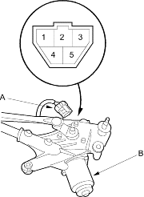
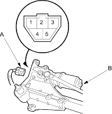
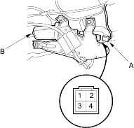

- Remove the wiper arms, hood seals and cowl covers (see page 22-179).
- Disconnect the 5P connector (A) from the wiper motor (B).
4-door:

5-door:

- Test the motor by connecting battery power to the No. 4 terminal and ground the No. 2 terminal of the wiper motor 5P connector. The motor should run. If the motor does not run or fails to run smoothly, replace the motor.
- Connect an analogue voltmeter between the No. 5 (+) and No. 3 (–) terminals and run the motor at low or high speed. The voltmeter should indicate 0 V and 4 V or less alternately.
- Open the tailgate and remove the tailgate lower panel (see page 20-209).
- Disconnect the 4P connector (A) from the wiper motor (B).

- Test the motor by connecting battery power to the No. 1 terminal and ground the No. 3 terminal of the wiper motor. The motor should run. If the motor does not run or fails to run smoothly, replace the motor.
- Connect an analogue voltmeter between the No. 4 (+) and No. 2 (–) terminals and run the motor.
The voltmeter should indicate 0 V and 4 V or less alternately.